Republic Venetae
«Блаженство тела состоит в здоровье, блаженство ума — в знании»
Фалес Милетский
Лада Дэнс - Регги в ночи 1993
Лада Дэнс - Не буду с тобой 1996
Лада Дэнс - Танцы у моря 1994
Жанна Фриске - Ла-ла-ла 2004
Мираж Татьяна Овсиенко - Новый герой 1989
Верасы - Малиновка 1980
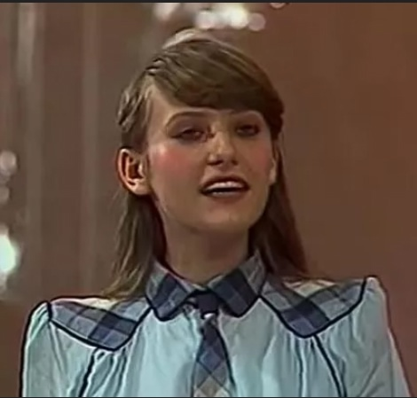
Верасы - Я у бабушки живу 1981
Верасы - Карнавал 1984
Верасы - Уж я к ней и так и этак 1984
Венеция и Генуя — две могущественные морские республики Средневековья, которые соперничали за экономическое влияние и контроль над торговыми путями в Средиземноморье. Венециано-генуэзские войны — четыре конфликта между Венецианской республикой и Генуэзской республикой, имевшие место между 1256 и 1381 годами, ведшиеся почти исключительно посредством морских столкновений в Средиземном и Черном морях.
Наталья Сенчукова - Доктор Петров Песня года 1993
Лада Дэнс - Девочка-Ночь 1993
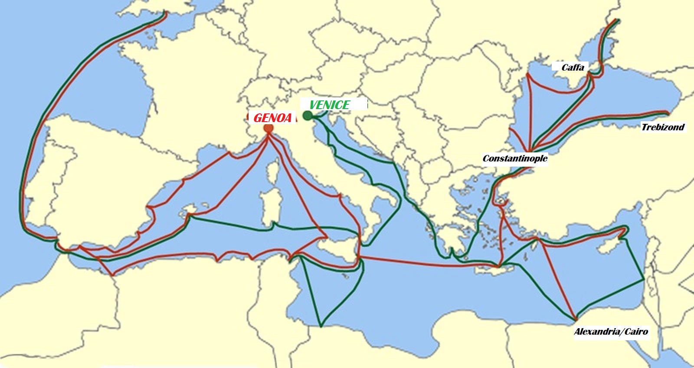
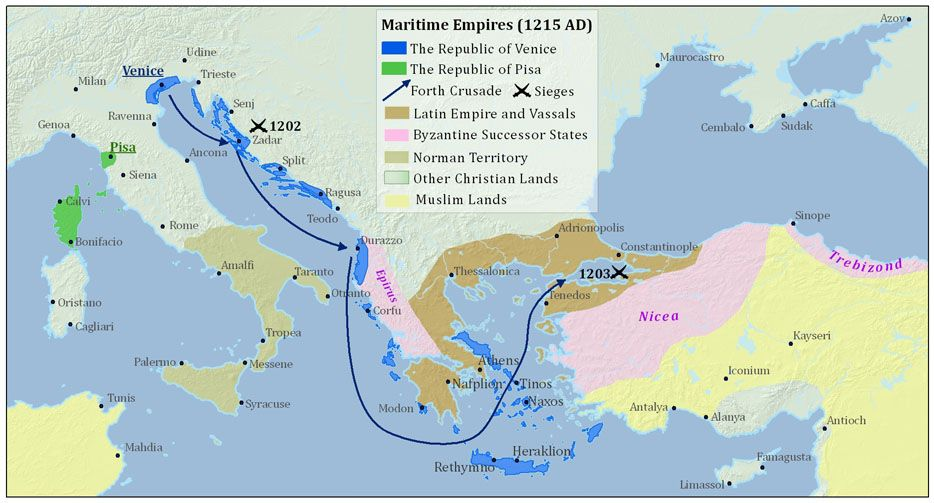
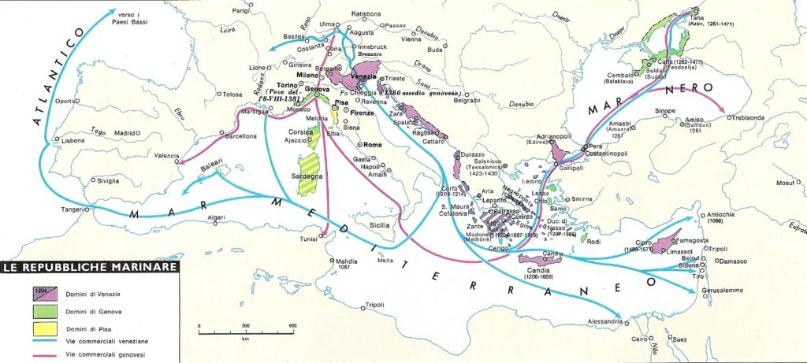
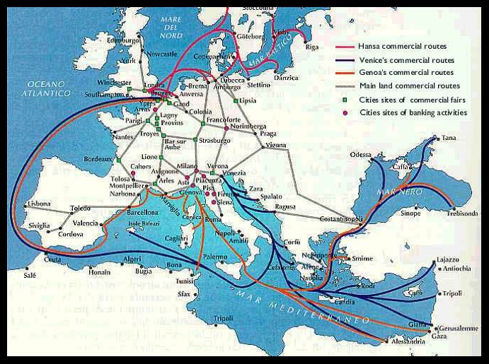
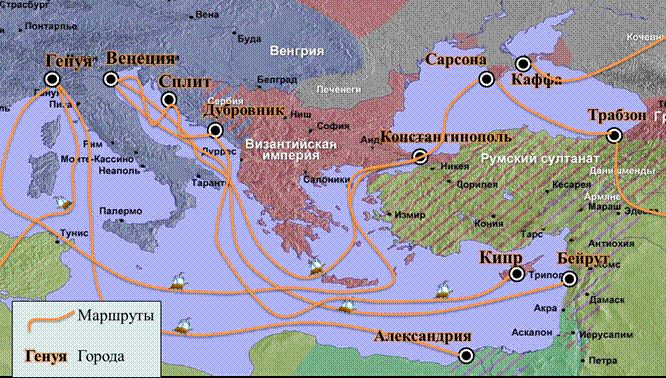
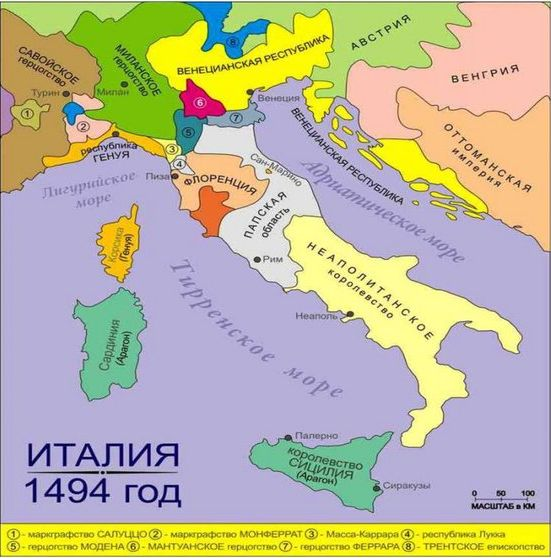
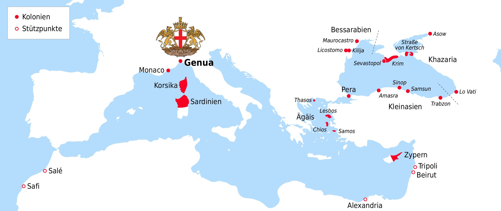
Верасы - Звезда любви 1986
Верасы - Караван 1986
Верасы - Музыка для всех 1986
Верасы - Любви прощальный бал 1986
ВИА «Песняры» - Вологда 1976
Алёна Апина - Ксюша 1991
Алёна Апина - Улица Любви 1992
Стрелки - Ты выбираешь сам 1999
Виктория Дайнеко - Я буду жить (Official Video) 2007
Песня - Полосатая жизнь 1977
Венецианская республика существовала с конца VII века (примерно с 697 года) до 1797 года. Венеция возникла после падения Западной Римской империи. Её географическое положение в лагуне обеспечивало естественную защиту и способствовало развитию мореплавания. Стратегическое расположение между Западной Европой и Востоком сделало Венецию главным торговым посредником Средневековья, контролировавшим морские пути, по которым в Европу доставлялись шёлк, пряности и другие предметы роскоши. В 697 году был избран первый дож — пожизненный правитель республики. Это стало началом уникальной системы олигархического управления, которая обеспечила политическую стабильность на века. Венеция развивала торговлю, судостроение, производство стекла и предметов роскоши. Здесь появились одни из первых в Европе банков и практики страхования морских грузов. С 1284 года Венеция начала чеканить собственную монету — венецианский золотой дукат (цехин). Колонии и подконтрольные Венеции территории протянулись от греческих островов Эгейского моря до Фриули и Бергамо, от реки По до Альп. В XV веке Венеция стала одним из главных центров Ренессанса, книгопечатания и живописи. С XVI века начался постепенный экономический спад, связанный с открытием Америки и перемещением торговых путей в Атлантику. В 1797 году республика прекратила существование после вторжения французских войск под командованием Наполеона.
Светле́йшая Генуэ́зская респу́блика (Республика Святого Георгия) — итальянское государство, существовавшее на территории Лигурии (административная область Италии на северном побережье Лигурийского моря), на северо-западном побережье Апеннинского полуострова, в составе Священной Римской империи Германской нации (с середины XI века (примерно с 1050-х годов) до 1797 года). Генуя стала самостоятельным городом-коммуной в середине XI века. Уже в ранний период Генуя стала важным торговым центром. Во время Крестовых походов она предоставила свой флот для перевозок и захватила несколько территорий на Ближнем Востоке, развернув там активную торговлю. Изначально в Генуе была установлена система выборного Консулата, которая просуществовала до 1194 года. Позже была введена система выборных консулов. Генуэзская республика имела владения в Средиземноморье и Причерноморье, включая острова (Сардиния, Корсика, Кипр, Лесбос и др.), а также территории в Крыму (Чембало, Солдайя, Воспоро, Каффа), черноморские города (Самсун, Синоп, Самастро) и города рядом с Константинополем (Галата и Пера). Последним годом существования республики стал 1797 год, когда туда вторглись французские войска под командованием Наполеона Бонапарта. Генуя вошла в состав Лигурийской республики, которую в 1805 году присоединила к себе Франция. После поражения Наполеона I республика была провозглашена вновь в 1814 году, однако вскоре была захвачена Сардинским королевством.
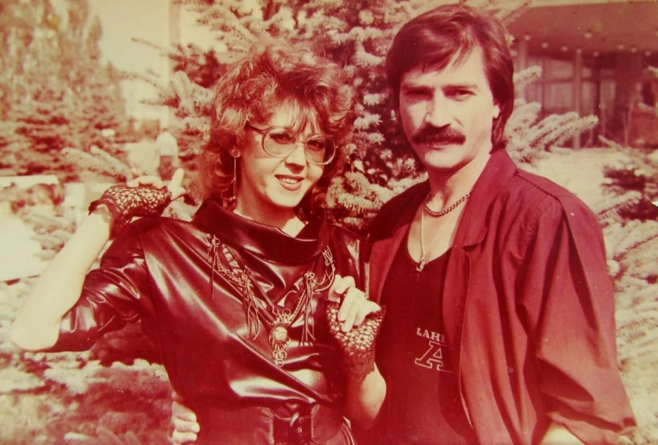
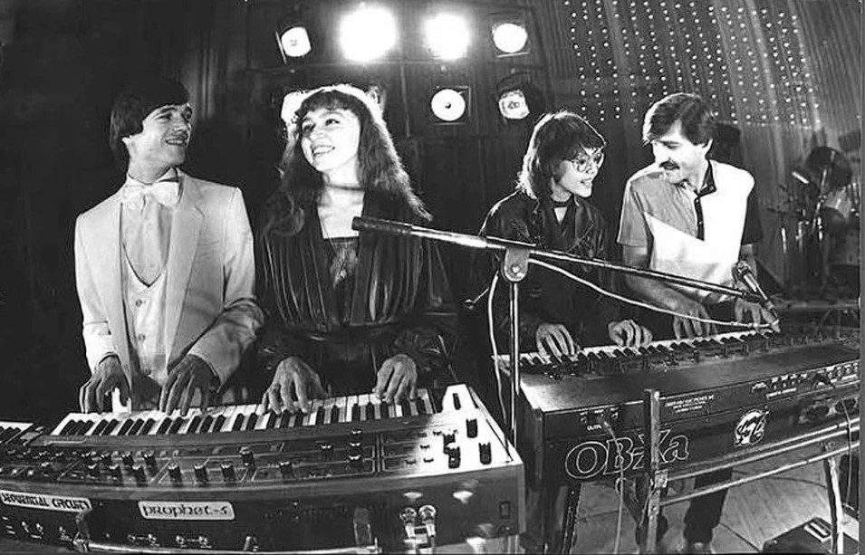
В 1979 году композитор Эдуард Ханок предложил «Верасам» песню «Малиновка». Песню записали на фирме «Мелодия», в первом и третьем запеве солировал Александр Тиханович, во втором пели девушки: Надежда Микулич, Галина Пучкова и Ядвига Поплавская, которая и придумала добавить в аранжировку знаменитую свистульку, которую одолжила у своей племянницы. На концертах в птичку поначалу дула Микулич. А поскольку птичка свистела, только когда в нее воду нальют, во все стороны летели брызги, и у певицы «плыла» тушь. Тогда решили, что дуть в свистульку будет Поплавская - она в очках. Однако на «Песне-80» «Малиновку» показали несколько в ином составе: на сцену вышли Светлана Скачко и Надежда Дайнеко, а звучала фонограмма, записанная совсем не ими. Ядвига Поплавская и Надежда Микулич не могли присутствовать на записи, потому что ушли в декретные отпуска. После оглушительного успеха «Малиновки» «Верасы» вошли в элиту советской эстрады.
26 июля 2007. Если бы не читатели «Комсомолки», мы бы ничего и не узнали о судьбе девушки, которая первой спела самый знаменитый шлягер «Верасов» - «Малиновку». Василий Раинчик, рассказывая историю ансамбля, вспомнил только, что звали её Надя, что нашёл он её в районном ДК на Брестчине и что пела она совсем недолго, следы её затерялись («КП» за 5 июля). - Надо же, 27 лет прошло, а люди помнят! - приятно удивилась Надежда Николаевна Величко (Дайнеко - ее девичья фамилия), когда мы рассказали ей о письмах и звонках читателей. - Живу я сейчас в Москве, занимаюсь маркетинговыми исследованиями. Хотела в молодости стать актрисой, поступала в Минске в театральный - не прошла. Преподаватель, помню, тогда сказал: «Девочки, ну что вы все в актрисы хотите? Идите лучше пойте». Я и пошла петь. А тут в «Верасах» солистки одна за другой в декретный ушли, им искали замену, и выбор случайно пал на меня. Родители не были против - когда пятеро детей в семье, особо не привередничают. Вот будущему мужу-моряку эта идея не очень нравилась. Он в плавании, я на гастролях - что за семейная жизнь? Да у нас она потом и не сложилась. В «Верасах» я, помню, зарабатывала неплохо. Если средняя зарплата была 70-80 рублей, то мы получали около 200. Но это был тяжёлый труд, по три-четыре концерта в день давали, и всё вживую, фанеры не было в то время. А у меня была серьёзная болезнь щитовидки. Я даже поначалу не хотела идти в «Верасы» из-за этого. Где-то год пропела, болезнь быстро прогрессировала, и мне пришлось уйти. Я потом ещё год лечилась. На память о «Верасах» у Надежды осталось лишь концертное платье с клетчатым воротничком и манжетами, в котором она пела «Малиновку» на «Песне-80». - Давно не доставала его из шкафа, но по размеру, наверное, оно мне будет впору, за последний год я похудела очень, - улыбается Надежда Николаевна. - Вот приеду домой на свадьбу дочки в сентябре - примерю.
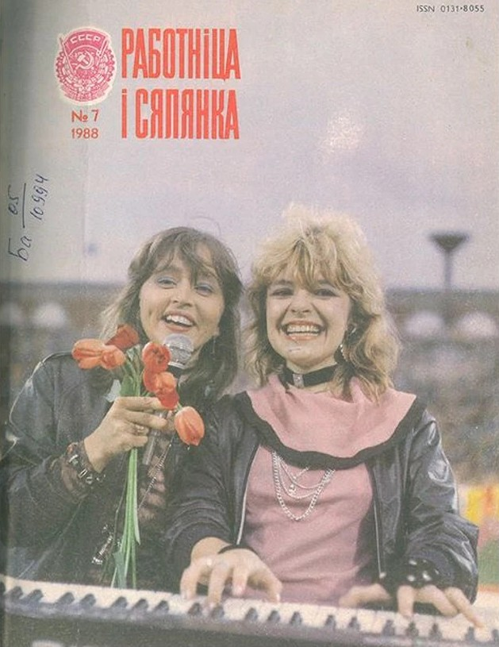
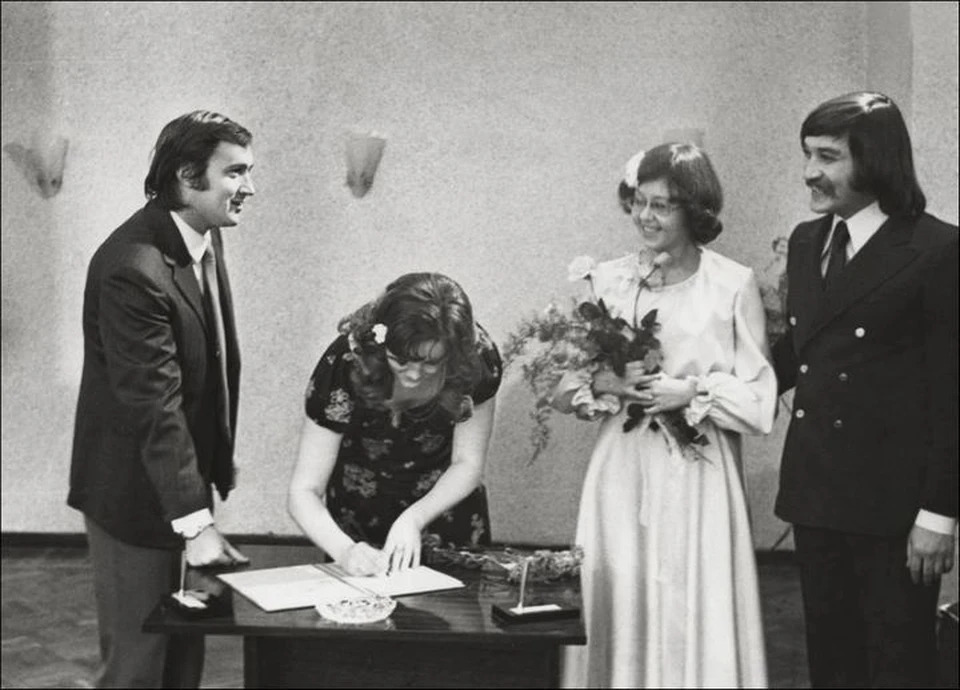
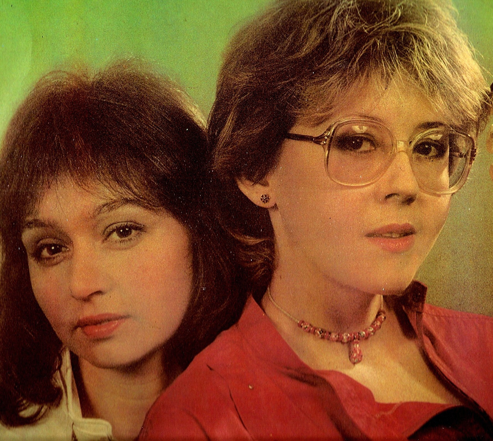
В 1974 году на пятом Всесоюзном конкурсе артистов эстрады уже после первого тура молодой коллектив привлёк к себе внимание жюри и слушателей, отмечавших своеобразие манеры распева и чистоту интонации.
В 1984 году ансамбль принимает участие в съёмках телепрограммы «Новогодний аттракцион», которую вели Игорь Кио и Алла Пугачёва.
Песня «Карнавал» (слова Владимира Някляева) руководителя ансамбля Василия Раинчика, которую показали в «новогоднем аттракционе»,
стала хитом
в 1984—1985 годах.
Текст песни
Малиновки заслыша голосок
Припомню я забытые свиданья
Три жердочки, берёзовый мосток
Над тихою речушкой без названья
Прошу тебя в час розовый
Напой тихонько мне
Как дорог край берёзовый
В малиновой заре
Как дорог край берёзовый
В малиновой заре
А волны шли неведомо куда
И камушки у берега качали
И пела нам малиновка тогда
О том о чём напрасно мы молчали
Сожжён мосток, ушла из сердца боль
Исчезла речка, вдаль умчалась юность
Но песня словно первая любовь
Малиновкой опять ко мне вернулась